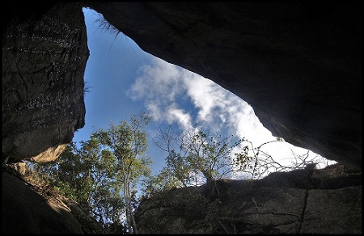
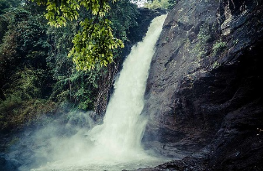

Located at about 1200 ft above the sea level, the Edakkal Caves are among the oldest human settlements ever discovered. Inside the caves are pictorial drawings and engravings that indicate the presence of ancient human settlements in the region.
Despite their name, the Edakkal Caves are not actually caves. They are part of a pre historic rock shelter, formed naturally when one huge boulder got wedged between two bigger ones. The name Edakkal itself means “a stone in between”.
The Edakkal cave paintings are remarkable in their sheer scale and complexity, but their origins are shrouded in mystery. Ever since their discovery in 1895, they have been a source of awe and wonder for tourists and historians alike.

Edakkal Cave
Soochipara Falls also known as Sentinel Rock Waterfalls is a three-tiered waterfall in Vellarimala, Wayanad, India. It is surrounded by deciduous, evergreen and montane forests. Locally referred to as Soochipara ("Soochi" meaning "Needle" and "Para" meaning "Rock"), the 15-20 minute drive from Meppadi to Sentinel Rock Waterfalls has views of a number of Wayanad's tea estates. The Sentinel Rock Waterfalls is 200 metres (656 feet) and offers a cliff face that is used for rock climbing. The water from Soochipara Falls later joins Chulika River or popularly known as Chaliyar River after Velarimala Hills near Cherambadi (Tamil Nadu) in Kerala.

Soochipara Waterfalls